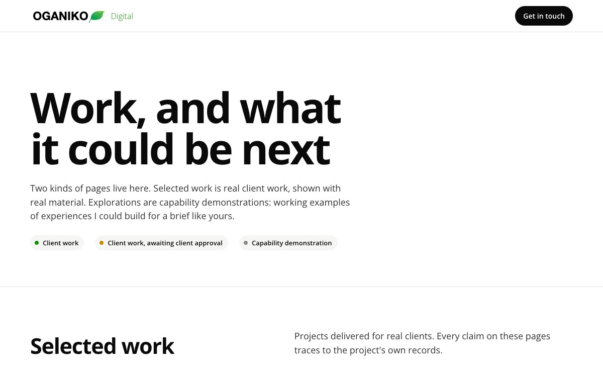
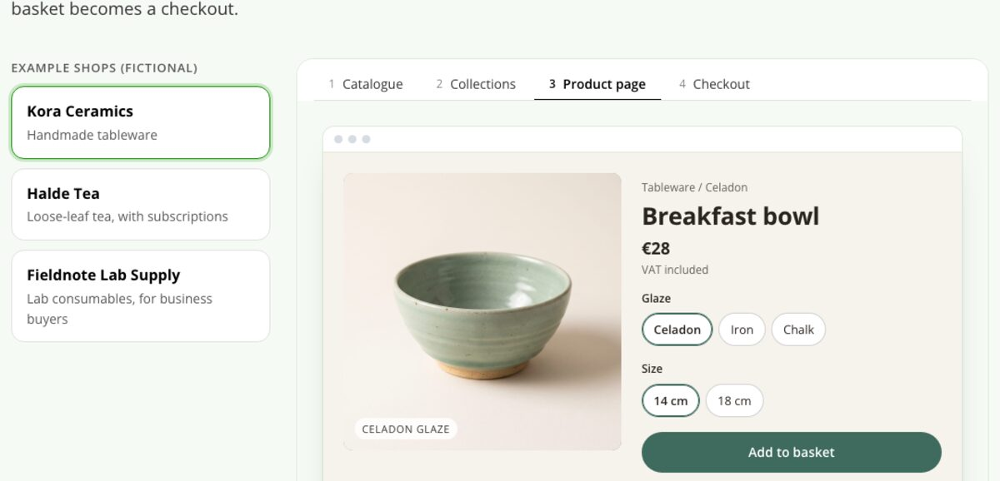
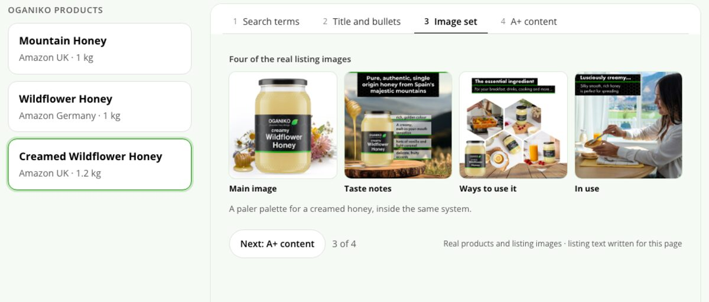
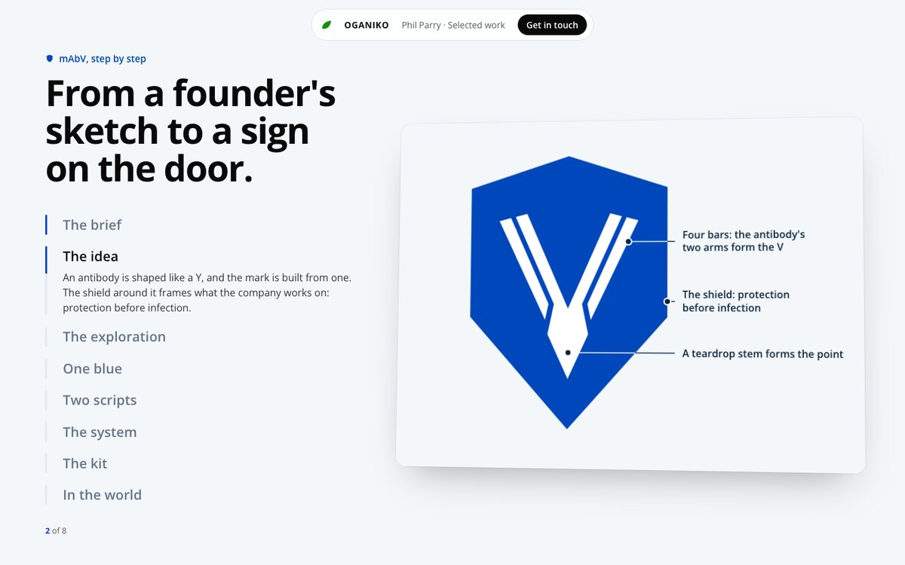
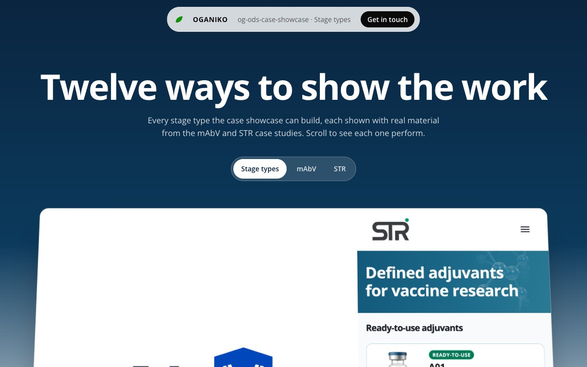

The work that shows what OGANIKO Digital can do: case studies of real client projects, working demonstrations of each service, and short offer videos for freelance marketplaces.
It is for business owners and product leads deciding who to hire for a website, a Shopify store, a design system or Amazon listings. Each piece answers their question by showing finished work rather than describing it.
Where things stand
Everything below is live on the Studio preview server, inside the private network. One case study is waiting for the client's approval before it can be shown publicly.
- Showcase siteHome page plus four service demonstrations. Live preview
- mAbV case studyIdentity, design system and brand kit. Deck, PDF and case page. Client approved
- STR case studyShopify storefront, design system and catalogue tools. Awaiting client approval
- UX review offer video46-second offer video in landscape and portrait. Rendered
- Case-study skillTurns a finished project into a scroll-driven case page. In use
Where the files live
- Source
- GitHub: OG-049-Portfolio-Showcase (private)
- Live copies
~/OG/reports/on the Studio, served on the tailnet at port 8452- Research store
- Drive: OG-Research / OG-049 Portfolio Showcase
- Start sheet
- OG-049 start sheet (to fill in)
One home page for the work. It splits real client projects (selected work) from capability demonstrations (explorations): working examples of what OGANIKO Digital would build for a brief like the visitor's.

- Open the showcase homeSelected work, explorations, and the services in preparation.
- How the showcase was madeInternal page: which approach each example uses, and why.
Explorations
Each one demonstrates a service instead of describing it. Any businesses in them are fictional.
-

WordPress sites your team can run
A brief becomes a sitemap, a block library and a finished page. Click a block to see what the team would edit.
Live preview -

Shopify stores that stay easy to run
One spreadsheet becomes collections, a product page with real buying choices, and a checkout, including one for business buyers.
Live preview -

Design systems your teams actually use
Twenty-three buttons become one set of tokens, one component and its rules.
Live preview -

Amazon product research and listings
Search research becomes a title, bullets, an image set and A+ content, using real products.
Live preview
mAbV, a new antibody company in Guangzhou working with Oxford University, needed an identity that investors and scientists could trust. The case study follows it from a founder's sketch to the sign on the office doors.

- Scope
- Identity, design system, brand kit, holding page
- Formats
- Scroll-driven case page, 10-slide deck, PDF. An editable PowerPoint is generated from the same deck on request.
- Case pageThe interactive version for the showcase site.
- DeckTen slides in the browser.
- Deck as PDF
- PlaybookHow to turn the next project into a case study with the same template.
- Case study planThe 4 Nov plan and the sources behind every claim.
A Shopify shop for scientists who compare specifications, not pictures. STR Technologies sells research-grade vaccine adjuvants; the store was built from scratch and is live at strsg.com, with its own design system and catalogue tools behind it.
Not for public use until STR approves it. Share the case page internally only.

- Scope
- Shopify storefront, design system, catalogue tools
- Formats
- Scroll-driven case page
- Case pageThe interactive version, shown on the showcase home as awaiting approval.
A 46-second video for the website and Shopify UX review offer. It plays muted on marketplaces, so every spoken line is also on screen. The demo footage is OGANIKO's own honey concept storefront, not a client site.
Cuts
- Offer, 16:9 (46 s)For Fiverr, Upwork and Malt.
~/OG/reports/offer-videos/ux-review/ux-review-offer-16x9.mp4 - Offer, 9:16 (45 s)For LinkedIn and Shorts.
~/OG/reports/offer-videos/ux-review/ux-review-offer-9x16.mp4 - B-roll, 16:9 (32 s)
~/OG/reports/offer-videos/ux-review/ux-review-broll-16x9.mp4 - B-roll, 9:16 (32 s)
~/OG/reports/offer-videos/ux-review/ux-review-broll-9x16.mp4
Script and source
- Script v4The current script, with timings, captions and shots. Earlier drafts v1 to v3 sit in the same folder.
- Edit project
~/OG-Research/_global/videos/2026-11-05-ux-review-broll/: compositions, music and renders.
The reusable method behind the case pages. It turns one finished project into a scroll-driven story: a pinned stepper where the picture changes step by step as the reader scrolls. It only takes real, delivered work, with the facts on record.

- Stage types demonstrationAll twelve stage types, each shown with real mAbV and STR material.
- Skill
~/OG/shared-skills/og-ods-case-showcase/ - Deck templateOne case file in, an HTML deck, PDF and PowerPoint out:
portfolio-mabv/deck/in the repo. Steps in the playbook.
Related methods
- Product story
- Explains a service by demonstrating it. Used for the four explorations.
~/OG/shared-skills/og-product-story/ - Reference to recipe
- Turns a site worth learning from into a written design recipe.
~/OG/shared-skills/og-reference-to-recipe/